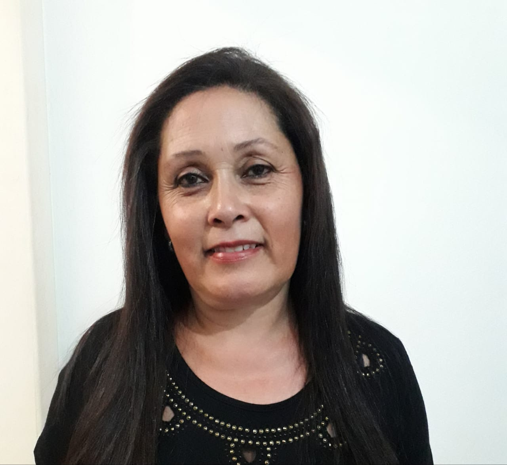
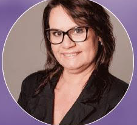
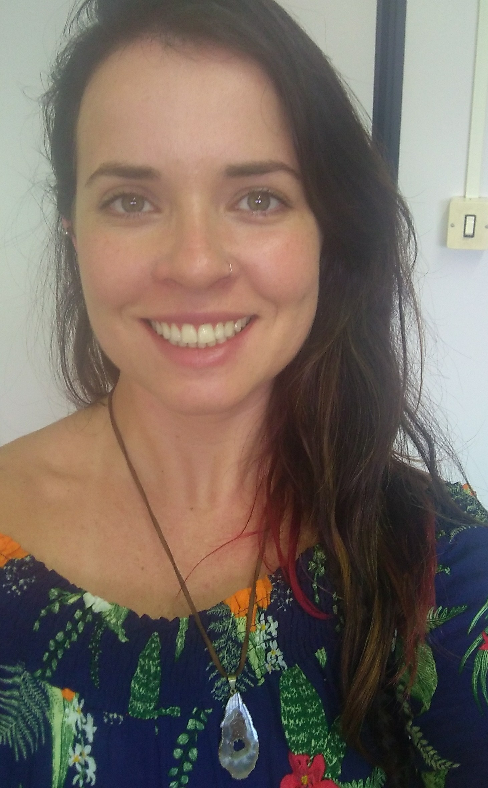
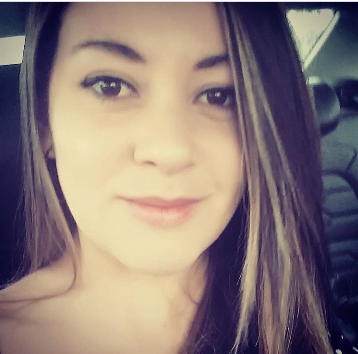

Tem como objetivo fornecer uma ajuda nutricional a fim de manter ou melhorar a saúde bem como aprimorar sua performance física e mental, através de uma completa avaliação, seguida de uma orientação individualizada. Somado a isso, orientar a fazer uso adequado dos alimentos, escolhendo bem a qualidade de cada um deles, pois comer bem é um ato de amor a si próprio.
Terapia Floral
k
O principal objetivo da terapia floral é a busca do bem-estar que significa um estado de satisfação plena das exigências do corpo e/ou espirito, através do equilíbrio das emoções. O terapeuta floral está capacitado a enxergar flores em você! Dessa forma, se busca nas essências florais ferramentas para analisar e identificar os estados emocionais que necessitam de harmonização, para auxiliar no processo de mudança, despertando um dom, talento, virtude e transformando e/ou fortalecendo uma qualidade do ser.
Reiki
j
O método Reiki é um sistema natural de harmonização, reposição energética e equilíbrio que recupera e mantém a saúde. É uma técnica japonesa para redução do estresse, alivio emocional e mental.
Barras de Access Consciousness
s
A técnica consiste em tocar, suavemente, 32 pontos energéticos localizados ao redor da cabeça que armazenam toda corrente eletromagnética das sinapses neurais que criam os padrões comportamentais e reações programadas. Cada ponto possui registros de milhares de informações limitantes que, por sua vez, impedem o funcionamento normal e facilitado que qualquer processo na vida deveria ter. Assim, os toques estimulam a liberação desses registros, promovendo mais fluidez em diversas áreas da vida.
Claudia Eli Ribeiro Teles
u

Claudia Eli Ribeiro Teles, massoterapeuta com registro da OSCIP, nº 9.000, desde 2018. Sou casada e mãe de duas filhas. Sempre amei cuidar da minha família e das pessoas ao meu redor, especialmente com cuidados terapêuticos como a massagem, sem saber que esta se tornaria minha atual profissão. Ingressei no universo terapêutico com o objetivo de trabalhar com a reflexologia apenas, mas acabei me tornando massoterapeuta, com muito orgulho. Hoje atuo como massoterapeuta, abrangendo as seguintes massagens: relaxante, desintoxicante, terapêutica, estética, drenagem linfática, além da reflexologia podal.
A massagem de um modo geral estimula e relaxa o corpo e a mente, a pele, o sangue e o sistema linfático, melhorando a renovação das células e removendo toxinas. Um sentimento geral de relaxamento e bem-estar surge quando os músculos tensos relaxam, as articulações ficam soltas e os nervos são acalmados.
Abaixo, segue alguns dos tipos de massagens e seus principais benefícios:
Massagens terapêuticas: para alívio de dores lombares, cervicais e ciáticas.
Massagens relaxantes: para alívio de tensões nervosas e musculares.
Massagens estéticas: para redução de medidas, celulites e gorduras localizadas.
Drenagem linfática: para desintoxicação do organismo e diminuição da retenção de líquidos, aumento do sistema imunológico, auxilia no tratamento e redução das dores ocasionadas por artrites e artroses, entre outras.
Já a reflexologia podal promove o tratamento de diversas afecções através de massagens nos pés. De acordo com esta doutrina, as massagens que se aplicam em certos pontos do corpo provocam um reflexo noutras regiões do corpo, permitindo o alívio de um mal-estar sem entrar em contato com a região em si. Auxilia de forma significativa nos tratamentos da medicina tradicional.
Agendamentos através do telefone|whatsapp: (51) 9 8545-0012
Elizabeth Chaves
h
Sou Nutricionista desde 1989, e atuei vários anos na Administração e Produção de Produtos Integrais em empresa própria. Sempre tive uma visão sobre o Ser Humano, compreendendo-o como um todo, em seus vários aspectos, acredito que o alimento é o nosso remédio e que a nossa saúde é nosso bem maior. O Reiki e a terapia Floral entraram na minha vida para trazer o sentido que estava faltando.
Em 2012 fiz o curso de Reiki e tudo mudou! Gostei tanto que me interessei fazer outros cursos de formação. Tornar-me terapeuta foi uma consequência da transformação que ocorreu comigo. Descobri que podia ajudar outras pessoas e esta escolha faz meu coração bater muito forte! Eu já estava num processo de mudança, assim em 2015 fiz a formação em terapia Floral, que expandiu minha vida.
Hoje contribuo através de atendimentos, integrando a pirâmide do Ser onde corpo, mente e espirito andam juntos para promover saúde.
Formações:
Nutricionista formada pelo Instituto Metodista de Educação e Cultura – RS - 1989
Terapeuta Reiki - Curso Nível III A pela Escola Larimar - 2012
Terapeuta Floral – Curso pelo Wicca-Centro de Terapias Energéticas - 2016
Curso de Extensão em Medicina Tradicional Chinesa – Faculdade Einstein - 2015
Sônia Maciel Kraemer
f

Sônia Maciel Kraemer, casada, nasci e resido em Pôrto Alegre, iniciei meus estudos com o Tarô na busca do auto conhecimento em 1995, juntamente com as aulas de dança oriental árabe. A dança é uma grande paixão na minha vida, me encontro, cuido da alma e do corpo. Participei de grupos de biodança, teatro paralelamente com meu trabalho na área de informática. Fiz cursos de de Reiki I,II III-A e Mestrado, curso de Aromaterapia, Cristaloterapia, ervas, chás, benzimento. Ampliando meus conhecimentos agora em técnicas de cura quântica como as Barras de Access.
Penso que o ser humano é um ser infinito, que tem muito a aprender sobre si e sobre o universo em sua volta. O primeiro passo é querer cura-se, depois, temos muitas descobertas a fazer sobre nós mesmos.
Abaixo relacionei um resumo sobre as terapias holística e de cura quântica que ofereço no momento.
Tarô Terapêutico - O Tarô é uma ferramenta para auxiliar e orientar situações cotidianas da vida. Através de arquétipos e mitos ajuda a direcionar melhor seu caminho, trazendo pensamentos do corpo e espírito.
Reiki - O Reiki é um tratamento preventivo que utiliza uma técnica de imposição das mãos. Atua com resultados concretos na ansiedade, insegurança, estresse, depressão, insônia, medo, assim como nos órgãos, tecidos e sistemas.
Aromaterapia/psicoaromaterapia - Os benefícios da aromaterapia englobam o corpo e a mente. Ela pode acalmar, auxiliar na concentração, ajudar a combater a enxaqueca, ansiedade e várias outras doenças.
Terapia Floral de Dr, Eduard Bach. “Ele acreditava que as doenças aconteciam devido a uma desarmonia entre o corpo, a alma e o espírito, devido à presença de energia negativa. Passou, assim, a trabalhar com o desenvolvimento de um método que retirava energia positiva da natureza, utilizando as flores”.Os florais combatem: medo, culpa, pânico, depressão, tristeza, apatia, ciúmes, cansaço, solidão, mágoa, indecisão, ansiedade e pensamentos excessivos.
Barras de Access - e uma ferramenta de cura quântica do Access Consciousness de expansão da consciência. Seu criador é americano Gary Douglas que vem expandindo essa técnica em mais de 40 países pelo mundo. Atua em várias doenças como pânico, TDHA, depressão, ansiedade, atua na motivação, relacionamentos, abundância ,bloqueios e em várias áreas da vida.
Cursos que ministro atualmente.
Iniciação em reiki
Curso de formação em Barras de Access com certificado internacional.
Curso de expressão corporal (dançando a essência feminina) , empoderamento ,auto-estima, dança, cura e bem estar.
autoconhecimento através do Tarô.
Cristina Monmany Sebastiany
d

Terapeuta e Mestre de Reiki no Método Usui, também graduada em Psicologia pela PUCRS.
Após anos como cliente de Reiki, acabei me encantando com a técnica e resultados e dei início a minha formação como profissional em 2008, concluindo com o Mestrado em Reiki em 2013. Atualmente, trabalho como psicóloga durante os primeiros dias da semana e como terapeuta de Reiki, fecho a semana com muita alegria atendendo nas quintas e sextas-feiras!
Telefone para contato: 998086076.
Kelly Telles
k

Kelly Juliana Teles dos Santos, practitioner em Barras de Access Consciousness e advogada. Atuo com a ferramenta de cura quântica Barras de Access desde 2018, após ter sido beneficiada de diversas formas por essa técnica incrível. Senti que precisava trabalhar com essa ferramenta maravilhosa que além de expandir a consciência, trabalha aspectos da personalidade que nos impedem de viver uma vida mais plena, ajudando a eliminar as crenças limitadoras e padrões negativos que muitas vezes são os responsáveis pelos processos de auto sabotagem e sentimentos de não merecimento que nos impedem de viver a vida com mais fluidez. As Barras de Access Consciousness nos proporcionam mais contato com a nossa essência ao reduzir nossos medos e aumentar nossa coragem e disposição, entre outros benefícios. Também é uma excelente aliada no combate e prevenção da depressão e ansiedade. É uma ferramenta indicada para qualquer pessoa que queira se desenvolver.
Formações:
Practitioner em Barras de Access Consciousness, desde 2018, formada pela facilitadora Márcia Freitas.
Practitioner em Programação Neurolinguística, desde 2012, formada pela Dolphin Tech.
Advogada especialista em Direito Civil e Processual Civil, desde 2015, formada pela Uniritter.
Agende sua sessão de Barras de Access - Whatsapp: (51) 9 9175-3310